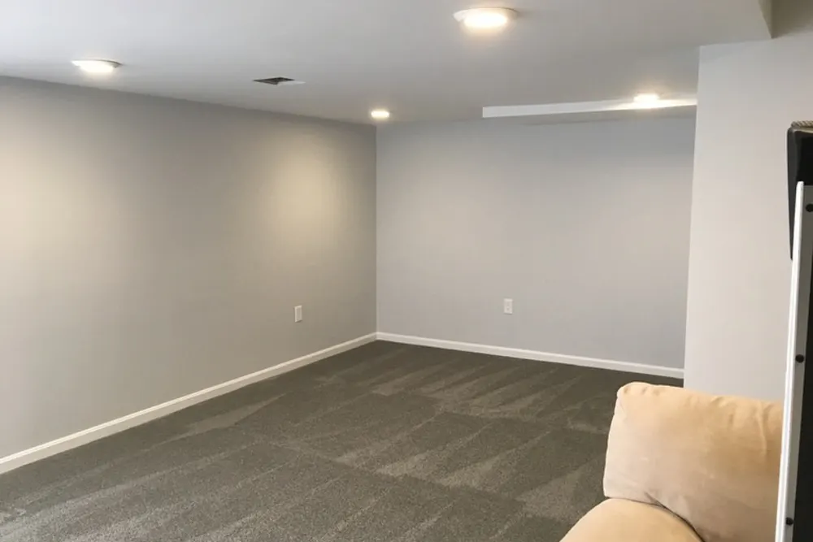

Basement finishing in Tewksbury, MA
Basement finishing Tewksbury MA homeowners can live in, from moisture check to move-in
Basement finishing in Tewksbury with DeFaria Construction turns an unfinished lower level into dry, warm, permitted living space, planned for Middlesex County homes and permitted through the Town of Tewksbury Building Department.
Our work
From open framing to a finished, insulated room
Watch a DeFaria conversion go from bare studs to an insulated, drywalled and painted room. A Tewksbury basement follows the same sequence, with moisture control first.
Get a Free Estimate
Local search focus
A Tewksbury basement starts with the walls you cannot see.

Across Tewksbury Center, North Tewksbury, South Tewksbury and Indian Ridge, Tewksbury pairs older colonial-era and farm homes near the center with mid-century capes, ranches and newer colonial subdivisions. A finished basement in Tewksbury only lasts if moisture, insulation and air sealing are handled before the first stud goes up, so the room stays dry and warm through a New England winter.
This page is for Tewksbury homeowners comparing basement finishing contractors. It covers local homes, real 2026 costs, permits, egress and the full process, with a direct path to a free estimate.
- Clear estimate conversations before the project starts.
- Direct communication with the homeowner from walkthrough to final walkthrough.
- Local coverage across Tewksbury and the wider Middlesex County area.
The scope
What a full Tewksbury basement finishing project covers

In Tewksbury, colonial-era and farm homes near the center and mid-century capes and ranches often add layout and access constraints.
- Foundation check, sealing and insulation first.
- Permitted electrical, plumbing and egress where needed.
- Finish work that matches the rest of the home.
Tewksbury permits and inspections run through the Town of Tewksbury Building Department, and DeFaria keeps that step organized so scope and timeline stay realistic.
Cost
How much does basement finishing cost in Tewksbury?

Plan on roughly $35 to $90 per square foot for a Tewksbury basement, which puts a typical 700 to 900 square foot project around $30,000 to $75,000 before upgrades like a bathroom or a wet bar.
- Moisture control or drainage work before framing.
- Ceiling height and ducts or beams that need soffits.
- A bathroom, wet bar or kitchenette below grade.
- An egress window for a bedroom or office.
In Tewksbury, colonial-era and farm homes near the center and mid-century capes and ranches often add layout and access constraints, so the estimate accounts for access, structure and prep before a single fixture is ordered.
DeFaria gives a fixed, itemized Tewksbury estimate at the walkthrough, so the price follows the real basement instead of a per-foot guess.
Process
How a Tewksbury basement project runs, step by step

A Tewksbury basement is built in a fixed order, and each phase is inspected before the next one starts.
- Walkthrough, measurements, moisture check and a fixed estimate.
- Design and permit application with the town.
- Moisture work, rim joist sealing and any egress cut.
- Framing, foam board insulation and fire blocking.
- Rough electrical, plumbing and heat, then inspections.
- Drywall, ceilings, flooring, trim and paint.
- Final inspection and walkthrough with you.
DeFaria coordinates the Tewksbury permit with the Town of Tewksbury Building Department before the rough-in, and keeps you updated at each step.
A typical Tewksbury basement runs about 6 to 10 weeks from permit to final walkthrough.
Materials
Materials that hold up below grade in Tewksbury

A Tewksbury basement sits against cold, damp concrete or stone, so every material is chosen to handle humidity without growing mold.
- Rigid foam board against the foundation, not fiberglass on concrete.
- Pressure-treated bottom plates and a capillary break.
- Mold-resistant drywall in damp-prone areas.
- Waterproof luxury vinyl plank flooring.
Around Tewksbury Center and North Tewksbury, colonial-era and farm homes near the center and mid-century capes and ranches often add layout and access constraints, so materials and waterproofing are matched to the home instead of picked from a generic list.
When to remodel
Signs a Tewksbury basement is ready to finish

A few clear signs it is time to turn a Tewksbury basement into living space:
- The family has outgrown the main floor.
- The basement stays dry after heavy rain.
- You need a home office, gym or guest room.
- Storage has taken over a space that could be used.
- You want more living space without an addition.
They are common across Tewksbury, from Tewksbury Center to South Tewksbury.
Moisture
Keeping a Tewksbury basement dry before it is finished
A finished basement in Tewksbury is only as good as the foundation behind it. Before framing we look at how water reaches the walls, how the floor drains and whether the space needs a sump, a backup pump or a properly sized dehumidifier.
In Middlesex County, spring thaw and heavy fall rains test every basement. If a Tewksbury basement leaks or stays damp, drainage comes first and finish work second.
For Tewksbury homes from Tewksbury Center to South Tewksbury, we tie the basement finishing to the realities of Middlesex County housing and keep Town of Tewksbury Building Department in the loop on approvals.
We match the basement finishing to the local homes. Tewksbury pairs older colonial-era and farm homes near the center with mid-century capes, ranches and newer colonial subdivisions.
For Tewksbury homeowners in Tewksbury Center, North Tewksbury, South Tewksbury and Indian Ridge, the basement finishing is scoped locally.
- Moisture readings on walls and slab.
- Drainage or waterproofing priced separately and openly.
- Radon test recommended before finishing.
- A capillary break between slab and framing.
Insulation
Insulating Tewksbury basement walls the right way
A warm basement depends on the layer behind the drywall. We use continuous foam on the foundation walls in Tewksbury, seal and insulate the rim joist, and fire-block the framing where the code requires it.
That assembly keeps condensation off the framing and makes the room feel like the rest of the house, not like a cellar with carpet.
For homes near Tewksbury Center, North Tewksbury and South Tewksbury, the Tewksbury basement finishing is planned case by case, with Middlesex County permits handled by Town of Tewksbury Building Department.
The Tewksbury basement finishing is built for the neighborhood it sits in. Tewksbury pairs older colonial-era and farm homes near the center with mid-century capes, ranches and newer colonial subdivisions.
Egress and code
Egress windows, ceilings and code for a Tewksbury basement
If you want a guest room or a teenager's room in a Tewksbury basement, plan the egress window from the start. Cutting the foundation and setting a code-size window and well is far easier before the walls are finished.
We measure ceiling height at the first visit, since ducts and beams decide whether a drywall ceiling, soffits or painted open joists make the most sense.
For homes near Tewksbury Center, North Tewksbury and South Tewksbury, the Tewksbury basement finishing is planned case by case, with Middlesex County permits handled by Town of Tewksbury Building Department.
We match the basement finishing to the local homes. Tewksbury pairs older colonial-era and farm homes near the center with mid-century capes, ranches and newer colonial subdivisions.
- Code-size egress opening with sill under 44 inches.
- Soffits or open joists to protect ceiling height.
- Safe stairs with handrails and lighting.
- Inspections before the walls close.
Bathrooms
Adding a bathroom to a Tewksbury basement

A bathroom turns a Tewksbury basement into a real suite. If the main drain sits below the new fixtures, they drain by gravity; if not, a sewage ejector pump or an up-flush system does the work without breaking much of the slab.
A new basement bathroom usually adds about $25,000 to $55,000, depending on how much concrete is opened and the fixtures you choose. Ventilation to the outside and moisture-resistant walls are part of every one we build.
From Tewksbury Center to North Tewksbury and South Tewksbury, every Tewksbury basement finishing is matched to the local housing stock in Middlesex County, with Town of Tewksbury Building Department handling the permit side.
Every Tewksbury basement finishing starts from the local reality. Tewksbury pairs older colonial-era and farm homes near the center with mid-century capes, ranches and newer colonial subdivisions.
Ideas
Popular ways Tewksbury families use a finished basement

The best Tewksbury basements are planned around one or two clear uses, so the lighting, outlets and layout support them from day one.
From Tewksbury Center to North Tewksbury and South Tewksbury, every Tewksbury basement finishing is matched to the local housing stock in Middlesex County, with Town of Tewksbury Building Department handling the permit side.
We match the basement finishing to the local homes. Tewksbury pairs older colonial-era and farm homes near the center with mid-century capes, ranches and newer colonial subdivisions.
- Family room or home theater.
- Home office with a door and daylight.
- Home gym with durable flooring.
- Guest suite with egress and a bathroom.
- Playroom with built-in storage.
Timing
Why fall and winter suit a Tewksbury basement project
Many Tewksbury families book exterior projects for the warm months and the basement for the cold ones. It keeps the crew busy indoors when the weather turns and frees the summer for decks and siding.
If you want a finished basement before spring, the time to measure, design and permit is in the fall and early winter.
Across Tewksbury neighborhoods like Tewksbury Center, North Tewksbury and South Tewksbury, we plan the basement finishing around how Middlesex County homes are actually built, and coordinate the local approvals with Town of Tewksbury Building Department.
The Tewksbury basement finishing is built for the neighborhood it sits in. Tewksbury pairs older colonial-era and farm homes near the center with mid-century capes, ranches and newer colonial subdivisions.
Project photos
Finished basement photos for Tewksbury homeowners
Real DeFaria basements, so Tewksbury homeowners can see the finish level before requesting an estimate.
Areas covered
Basement finishing across Tewksbury neighborhoods

DeFaria Construction finishes basements across Tewksbury and nearby Middlesex County towns, with enough local context on this page to decide whether we are the right fit before you call.
Across Tewksbury Center, North Tewksbury and Indian Ridge, Tewksbury projects are matched to the neighborhood and run through the Town of Tewksbury Building Department.
- Tewksbury Center
- North Tewksbury
- South Tewksbury
- Indian Ridge
Reviews
What Tewksbury homeowners say about DeFaria Construction
DeFaria Construction has a 5.0 rating from 15 reviews on Google. See all reviews on Google.
DeFaria Construction completed a full remodel of our master bathroom to our great satisfaction. Demolition down to the studs and subfloor was completed quickly. Plumbing changes and waterproof underlayment were quickly installed. Tiling of the floor and shower were beautifully done. Installation of…
Excellent work! I’m extremely happy with the results of my bathroom. Defaria Construction did an amazing job and was very professional, careful, and detail-oriented throughout the entire project. The workmanship and finishing touches were outstanding. You can really tell when a company takes pride…
I have work with Defaria Carpenter in my project, and they give me the best experience I never have with another contractor. Thank for the great job you guys done at my house.
Internal links
Related DeFaria Construction pages
Compare the full basement finishing guide, the county service area and other Tewksbury services. Each link points to a live page with its own purpose.
Experience
Why this Tewksbury page is built for real homeowners, not just keywords.
DeFaria Construction is a local, owner-led remodeling company working across Essex County and Middlesex County. With Luiz DeFaria involved directly and an A+ BBB record behind the work, the Tewksbury basement page is written around real moisture control, insulation and finish work, not a town name dropped into a template.
DeFaria Construction is a licensed and insured local contractor with an A+ BBB rating and verified customer reviews, and every Tewksbury project is owner-led by Luiz DeFaria from the first walkthrough to the final one.
"our Tewksbury basement finally feels like part of the house, warm and dry."
Tewksbury homeowner

What Tewksbury and nearby Middlesex County homeowners say: Read DeFaria Construction reviews on Google. BBB Accredited Business with an A+ rating since March 2024, verify on BBB.
The goal is to help someone searching for Tewksbury basement finishing understand the scope, the neighborhoods covered and how to start a direct conversation before requesting a free estimate.
Call (617) 893-2221 for a free estimateFAQ
Common questions about basement finishing in Tewksbury
How much does basement finishing cost in Tewksbury?
Most Tewksbury basements run about $35 to $90 per square foot, so a typical 700 to 900 square foot basement lands roughly between $30,000 and $75,000. Moisture work, a bathroom or an egress window add to that. DeFaria gives a fixed, itemized estimate at the walkthrough.
Do I need a permit to finish a basement in Tewksbury?
Yes. Turning a basement into living space needs a building permit, and electrical and plumbing work need their own permits by licensed trades. Tewksbury permits and inspections run through the Town of Tewksbury Building Department, and DeFaria keeps that step organized so scope and timeline stay realistic.
How long does it take to finish a basement in Tewksbury?
Most Tewksbury basements take about 6 to 10 weeks once the permit is issued, longer with a bathroom, an egress window or moisture repairs.
Do I need an egress window in my Tewksbury basement?
Any basement bedroom needs a code-size emergency escape window and well. A family room, office or gym without a sleeping room usually does not, but alarms, stairs and ceiling height still have to meet code.
Can you finish a Tewksbury basement that gets water?
Only after the water problem is fixed. We check grading, gutters, cracks, the sump and humidity first, and price any drainage or waterproofing separately and openly.
Is DeFaria Construction licensed and insured?
Yes. DeFaria Construction is a licensed and insured contractor with an A+ BBB rating and verified Google reviews, and every Tewksbury basement is owner-led by Luiz DeFaria.